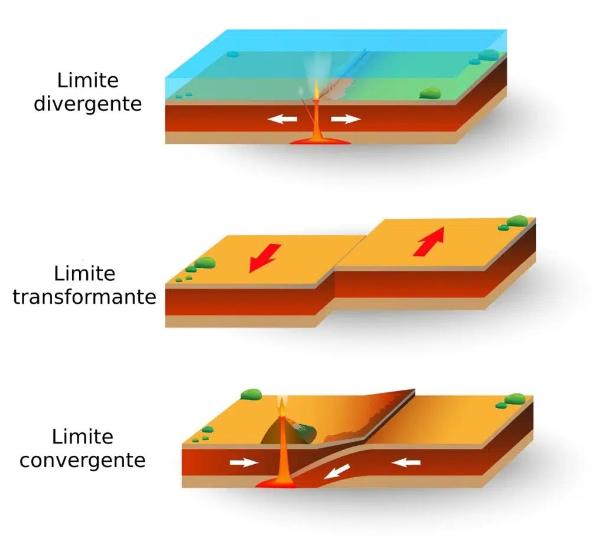

Placas Tectónicas
¿Que son placas tec tónicas?
tónicas?
Una placa tectónica o placa litosférica es un fragmento de litósfera relativamente rígido que se mueve sobre la astenosfera, una zona relativamente plástica del manto superior. toda la litosfera esta dividida en placas tectónicas, quince de ellas de gran tamaño y mas de cuarenta microplacas.
¿Cuales son las placas tectónicas de la tierra?
La africana, antártica, euroasiática, indo-australiana, nazca, norteamericana, pacifica y las placas de América del Sur. Una de las mas pequeñas son Caribe, Cocos, Filipina y Somalia.
¿En que ayudan las placas tectónicas?
Ayudan a mantener el vulcanismo activo por mucho tiempo.
¿Como se forman las placas tectónicas?
según científicos hace millones de años la corteza terrestre se calentó, lo que resulto en una expansión de la concha exterior que se fracturo lo que ahora conocemos como placas.
Placas Tectónicas
